About mommy
But I have been missing my mom. Dad says that she was really sweet, but unfortunatelly, they stoped talking. If mommy ever sees it, I hope she reads it.
She probably won't find it, but I have at least tried to say what I wanted to say all this time. But if she does, please please please just try to read it. I have written a lot of what I wanted to say and I really tried, please, just try reading it. And if she does, please look at it one more time, because I will be making some changes to it.
The only one who can find this is her, because nobody looks at this page when there are no quests. I know she does not like it, but please read this to know what me and Denys wanted to tell her.
Letter to mommy (remake!)
There are a lot of things I wanted to tell her. There are a lot of explanations and everything, so I made a letter to her.
DISCLAIMER: Toto je pro slečnu jménem Týnka. Pokud nejste Týnka a myslíte si, že to je pro Vás, tak tomu určitě tak není!
letter.pdf
Proč táto stránka vůbec existuje? 🐼🐼🐼🐼🐼
Protože mě napadlo, že stalkuješ Denyse. A pokud ne, tak good for you a nikdo jiný to nejspíš nenajde. Btw Denys není mad, že ho stalkuješ, pokud to děláš. ALE MOHLA BYS NAPSAT, KDYŽ UŽ JO!!!!! 🐼🐼🐼🐼🐼🐼🐼🐼🐼🐼🐼
A mě zajímá kdo je Týnka. Já přisahám, že účet s podobnou profilovkou mě začal sledovat před pár lety (ty blond vlasy na trávě z Pinterestu) a nikdy mi nepovolil sledování nazpět. Ale tím pádem je mega propracováný a good job.
A nezlob se na Denyse pls pls pls.
A tady vzníká cool paradox, že pokud jsi to našla, tak tě Denys zajímá natolik, že jsi našla i toto a je to divné.
MOST IMPORTANT!!! 🐼🐼🐼🐼🐼
Můžeme se prosím přestat hádat a jít na sushi? Pls pls pls, jen mě to napadlo, když jsi měla narozky. Nebo na dort. Pls. A promluvíme si (měli jsme to udělat již před dvěma lety). A nebudeme se už nikdy hádat a "uzavřeme mír" (idk jak to nazvat, ale chápeš).
🐼🐼🐼🐼🐼🐼🐼🐼🐼🐼🐼 (this is me, ale na sushi chtěl Denys)
They got flying cars and GTA VI before jsme se usmířilí.
RATE MY FIT
Rate my (pan Pandas) fit (ignore Denys).
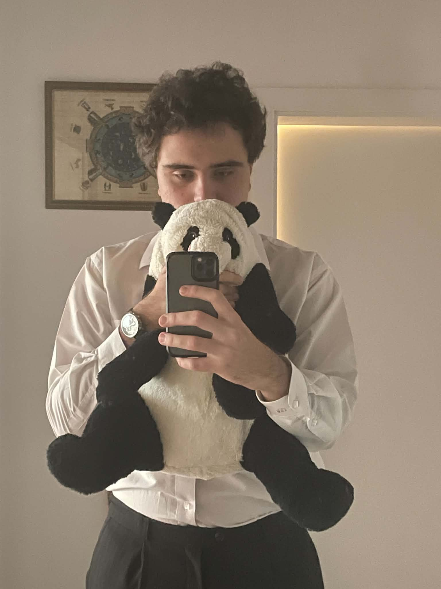

Why can't I read it?
Idk, je tam nějaký heslo, má čtyři slova, neuhádneš ho, ale pojď na sushi. Pokud chceš, pošlu ti ho na mail nebo do zpráv.
Privacy concerns
Chci smazat odkazy na tuto stránku, aby se k ním vůbec nikdo nedostal. Ale ulož si prosím odkaz, pokud sem chodíš. (danboss772.github.io/authors.html). A napiš Denysovi pls, až to uděláš (vím, že nechceš, ale já taky nechci, aby se k tomu někdo dostal, i když se snažím implementovat nějaké bezpečnostní prvky jako je to heslo).
Any other ways to read it?
Mohu ti to poslat do zpráv, jestli chceš.
Má Denys opravdu problémy s hlavou, že tohle vymyslel?
Denys chodil za psycholožkou a je v pohodě, navíc teď si z toho trochu dělá srandu (ale myslí vážně, že se nechce hádat a chce na sushi, ale vymysleli jsme s nim mega vtipný comics). Actually mohli byste tam někdy zajít spolu s Denysem (a je to myšleno vážně).
Are you trying to offend me? (most important)
Aneb jestli toto má být urážlivý. Tímto jsem rozhodně nechtěl nikoho urazit. Alespoň se to snažím nějak napravit. Pojal jsem to v humoristické formě, doufám že i tebe to pobavilo nebo rozesmalo. Dělám to jen proto, že jsem ztracený v tom proč mě po tolika letech sleduješ (je divný si mě zablokovat na ig ve stejný den jak jsem si tě zablokoval já třeba).
Jestli ti to přijde urážlivý, tak to určitě smažu, nebo určitě to chci jednou smazat a aby táto stránka neexistovala. But it's the only normal way to write something to you. Je tady jen proto, že Denys je hodně ztracený v tom co se děje s tebou a snaží se to nějak pochopit. A proto jsem napsal dopis, kde se to snažím rozvést. A třeba takové Reels co sdilím na Instagramu jsou také části obrazu (doufám, že jsou tak divné, že až vtipné), ale trochu ho to ztrapňuje.
Should we talk?
Ano, prosím prosím prosím moc moc moc. 🐼🐼🐼🐼🐼🐼🐼🐼🐼🐼🐼🐼
What if I have had my birthday?
Vše nej, birthday girl! I proto jsem napsal tento dopis a v něm jsou i přání a snad to uvidíš.
Doufám, že ti nezkází náladu (fakt tam není nic, co by ti ji zkazilo, je to safe, trust me).
A celkově jsem ti nechtěl tímto kazit narozeniny (doufám že ne), pokud to najdeš někdy v tomto období.
A actually je mi líto, že Denys ti tento rok nedal ani bonbóny. Ale můžeme na sushi ig.
Upřímně jsem ti chtěl napsat zprávu, ale zase respektuji tvé přání se nebavit a teď od nedávna mám block od tebe na ig a nechtěl jsem rušit. A idk jestli Denyse bereš jako kladnou nebo zápornou postavu (pana Pandu určitě jako kladnou).
One more thing!
We are getting over the honeymoon phase of semester a občas Denys chodí unavený. Asi v pátek Denys byl v místním Lidlu a zdálo se mu, že tě viděl (asi ne, byla to podobná slečna, ale měla džiny a nějaký nový iPhone), ale bylo to před zavíračkou a už nemohl odejít.
Proto kdybyste se náhodou někde potkali, tak se nemusíš bat, snáží se odejít, a určitě za tebou nepřijde, stejně jako tenkrát, když tě potkával v autobusech.
Já jedině píšu na tuto stránku a Denys mě občas prosí sem něco napsat, ale určitě tě nechceme nijak sledovat. Jen táto stránka je jediný normální způsob tě kontaktovat a doufat, že to najdeš.
D and you?
YOu are not friends, because you both did and are doing a lot of stupid things. There is only Mr. Panda, who is trying to change something. Maybe you will finally stop arguing and be friends.
Comics 1. Sad ending
They did not went for sushi and she is still mad with him. They could not talk.
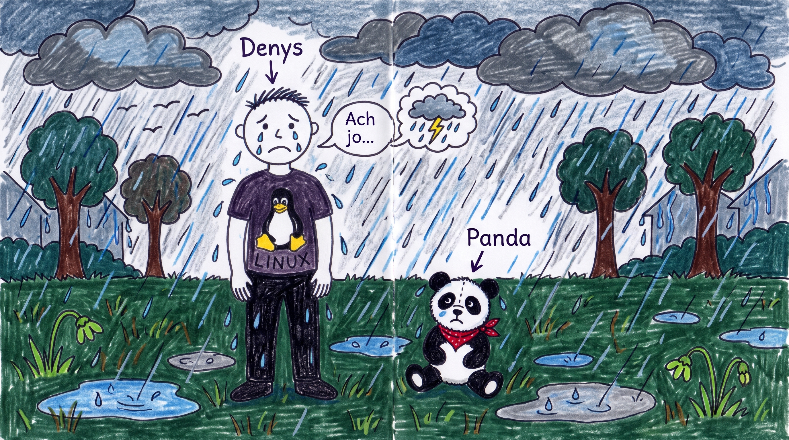
Comics 2. Good ending
They went for sushi and everything was good.
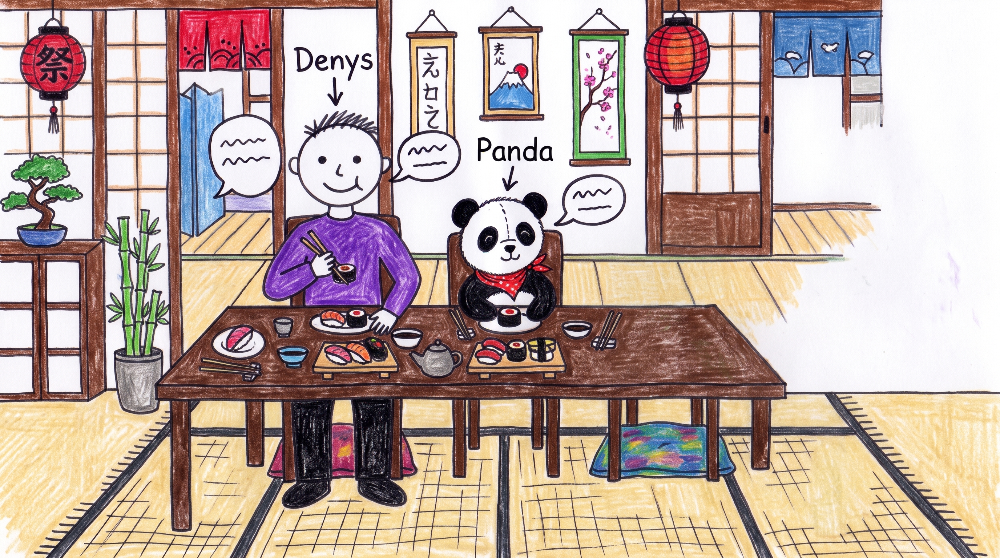
Untill she sees him sad and not eating sushi and asks what had happended.
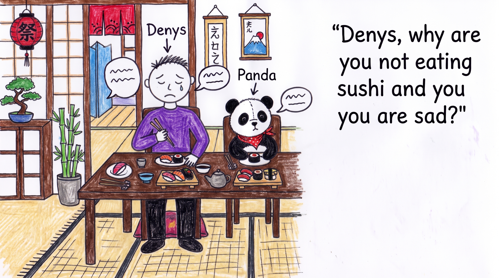
He says: "You know, one my Japanese friend says that sushi here are not real and it is offensive to Japan"
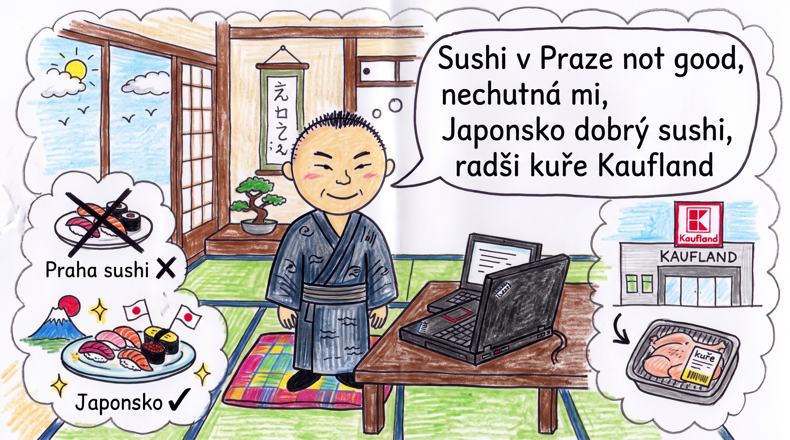
But in reality he was really glad that they have talked after all those years and now she is not so mad with him and he finally said sorry to her.
Good ending. She is not so mad with him and she does not stalk him, because they have talked normally.
Comics 3 (no ending)
NEEEEE, NENÍ TO HOTOVÉ. Ale pan Panda kreslí, jak půjdeme na sushi (ROZHODNĚ NIC URÁŽLIVÉHO A BEZ TVÉHO OBLIČEJE A HLAVNÍ POSTAVOU JE TAM DENYS!!!) a je to mega vtipné, ale snad ne urážlivý.
PRO POCHOPENÍ MUSÍŠ VĚDĚT LORE S ADÉLOU. ALE JEŠTĚ VÍC COOL JE TO ČÍST, KDYŽ LORE S ADÉLOU NEZNÁŠ.
Denys mit his Freundin Adelka are going to the meeting.
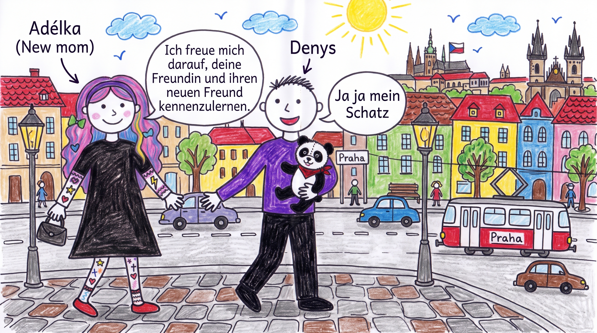
Everyone is chatiing at sushi.
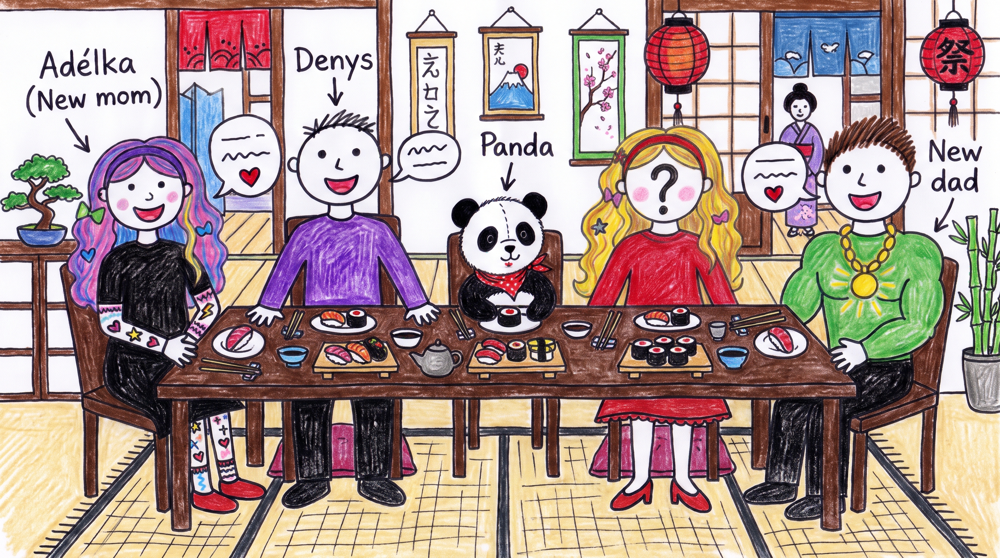
Everything goes great and they decide to go to Denys'es place.
Here Denys and new dad decided to play the brand new GTA VI.
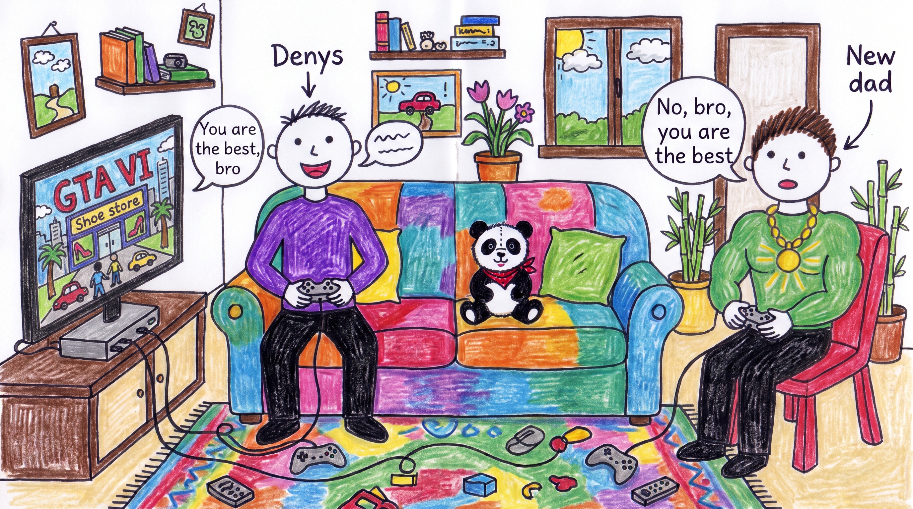
They decided to drive to the "shoe store" Poznámka: "shoe store" je místo, kde ženy tančí pro muže, říká se tomu shoe store, protože je označen jako dámská obuv s podpatkem.
But new dad does not want to look at those half naked women, he loves his own. Denys tells him, that it is right and not to make the same mistake as him.
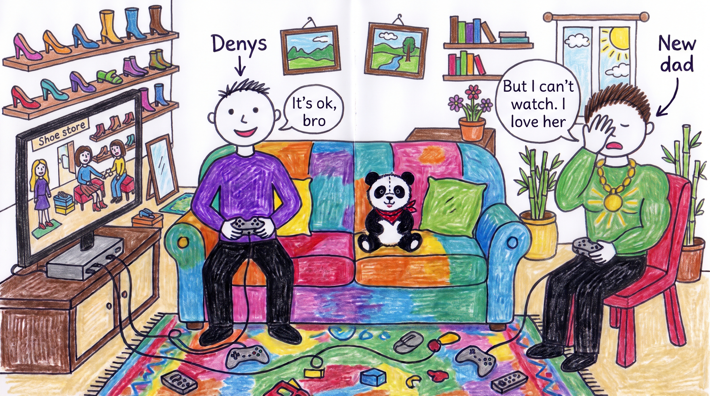
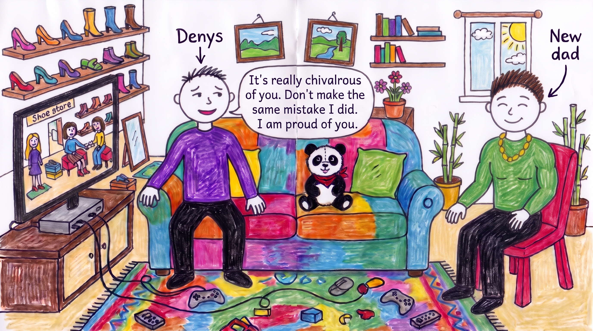
At the same time Adelka and new mom are talking in the kitchen (They are spilling tea). They understand each other and became friends.
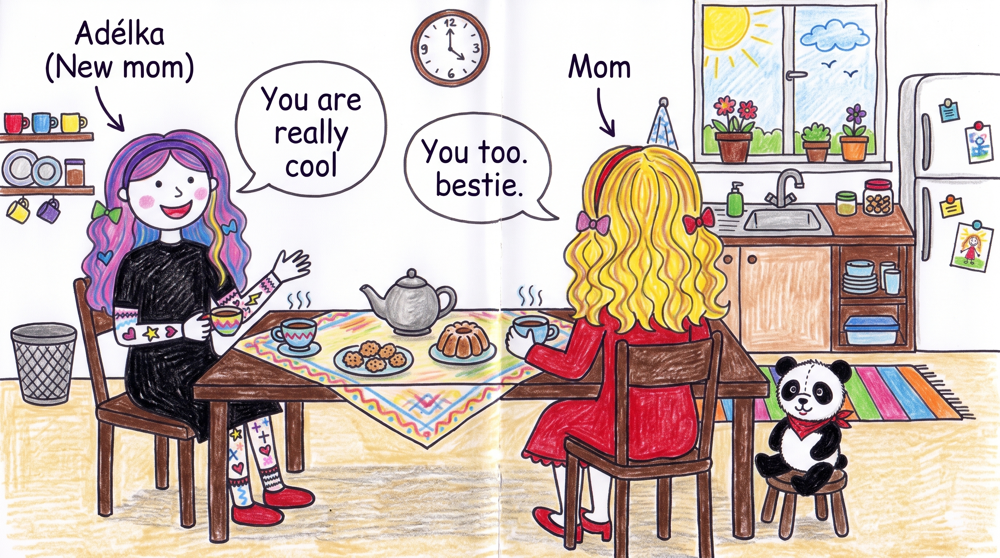
They even have the same opinion on Denys at "Hate Denys club" (Mr. Panda do not have the same opinion).
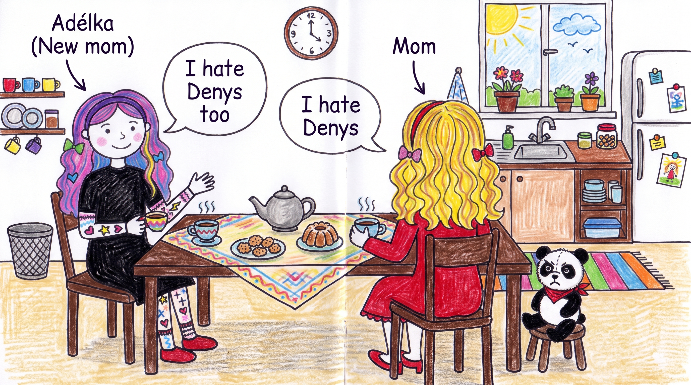
Is this the end? Já nevím co tam dat dál a teď jsem se u toho hrozně smal (a hlavně u obrázku Japonce, protože je na základě mého kamaráda).
Je to výzva! Ale faktm vidíš, že se snažím to napravit? A i comicsy ukazují, jak by to mohlo být krásný, kdybychom se nehádálí. PROTO POJĎ SE PŘESTAT HÁDAT A VYMYSLÍ KONCOVKU PLS PLS PLS 🥺🥺🥺🫶🫶🫶
A actually to vždy zabere hromadu času, abych něco udělal, tak snad to někdy uvidíš. A dělám to jen proto, že finally se chci přestat hádat.